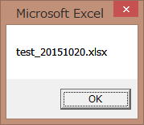

第21回.ファイル一覧を取得する（Do～LoopとDir関数）
マクロVBAで他のブック（ファイル）を扱う時、まず問題となるのがファイル名です。
ファイル数が常に同じでファイル名も変化しなければ良いのですが・・・
ファイル名を取得するには、Dir関数を使います。
Dir関数
変数 = Dir(パス名)
該当ファイルが見つからないときは、長さ0の文字列("")が返ってきます。
フォルダ内のすべてのファイルに対して繰り返して処理を実行する場合は、引数を指定せずにDirを実行してください。
以下で、実際のDir関数の使い方を順にみていきましょう。
Dir関数の使い方
"一覧"というサブフォルダがあり、その中に、
"test_20151019.xlsx"
"test_20151020.xlsx"
これらのファイルがあるとして、
～.xlsx～
という事になります。
*はあらゆる文字数、あらゆる文字に置き換えられるという事です

このように該当するファイルの正しい名称がDir関数で順番に取得できます。
これで、"test_20151019.xlsx"を取得し、
これで、"test_20151020.xlsx"を取得しています。
ファイルの一覧を取得するマクロVBAコード
A列を消去します、前回の一覧が残っている場合の対処として最初に消しておきます。
Columns(1)
Columns("A")
これらでも同じ事になります。
一覧\～.xls～
このようなファイル
変数iは、シートの出力行数に使います、最初は1行目からです。
i = i + 1
これで、変数iは1増えます。
・・・
Loop
Whileのあとに書かれた条件が満たされている間、Loopまでの処理を繰り返します。
Do Until sFileName = ""
これでも同じになります。
Untilは条件が満たされるまで、Loopまでの処理を繰り返します。
このファイルの一覧を使って一つずつファイルを開いて何らかの処理していきます。
何も見ずに書けるまで繰り返し書いて覚えてしまいましょう。
そして、ステップインF8でその動きをしっかり確認してください。
Do～Loopステートメント
Do～Loopは、繰り返す回数ではなく、繰り返す条件を指定するものです。
・・・処理・・・
Loop
または
Do [Until 条件式]
・・・処理・・・
Loop
Untilは、条件を満たす迄、・・・処理・・・を実行します。
ExcelマクロVBA入門等の対応ページ
Dir関数の制限について
同じテーマ「マクロVBA再入門」の記事
第18回.シートをコピー・挿入・削除する（Worksheets,Copy,Add,Delete）
第19回.ブックを開く・閉じる・保存する（Workbooks,Open,Close,Save,SaveAs）
第20回.全てのシートに同じ事をする（For～Worksheets.Count）
第21回.ファイル一覧を取得する（Do～LoopとDir関数）
第22回.複数ブックよりデータを集める
第23回.複数のプロシージャーを連続で動かす（Callステートメント）
第24回.マクロの呪文を追加してボタンに登録（ScreenUpdating）
第25回.月別ブックより部署別シートに担当別に集計するNo1
第26回.月別ブックより部署別シートに担当別に集計するNo2
第27回.月別ブックより部署別シートに担当別に集計するNo3
第28回.月別ブックより部署別シートに担当別に集計するNo4
新着記事NEW ・・・新着記事一覧を見る
VBA100本ノック 100本目：WEBから100本ノックのリストを取得｜VBA練習問題（3月3日）
VBA100本ノック 99本目：自動席替え（行列と前後左右が全て違うように）｜VBA練習問題（3月2日）
VBA100本ノック 98本目：席替えルールが守られているか確認｜VBA練習問題（3月1日）
VBA100本ノック 97本目：Accessデータを取得（グループ集計）｜VBA練習問題（2月27日）
VBA100本ノック 96本目：Accessデータを取得（マスタ結合&抽出）｜VBA練習問題（2月26日）
VBA100本ノック 95本目：図形のテキストを検索するフォーム作成｜VBA練習問題（2月24日）
VBA100本ノック 94本目：表範囲からHTMLのtableタグを作成｜VBA練習問題（2月23日）
VBA100本ノック 93本目：複数ブックを連結して再分割｜VBA練習問題（2月22日）
VBA100本ノック 92本目：セルの色を16進で返す関数｜VBA練習問題（2月20日）
VBA100本ノック 91本目：時間計算（残業時間の月間合計）｜VBA練習問題（2月19日）
アクセスランキング ・・・ ランキング一覧を見る
1.最終行の取得（End,Rows.Count）｜VBA入門
2.RangeとCellsの使い方｜VBA入門
3.変数宣言のDimとデータ型｜VBA入門
4.マクロって何？VBAって何？｜VBA入門
5.Range以外の指定方法（Cells,Rows,Columns）｜VBA入門
6.セルのコピー&値の貼り付け（PasteSpecial）｜VBA入門
7.繰り返し処理（For Next)｜VBA入門
8.セルに文字を入れるとは（Range,Value）｜VBA入門
9.マクロはどこに書くの（VBEの起動）｜VBA入門
10.とにかく書いてみよう（Sub,End Sub）｜VBA入門
このサイトがお役に立ちましたら「シェア」「Bookmark」をお願いいたします。
記述には細心の注意をしたつもりですが、
間違いやご指摘がありましたら、「お問い合わせ」からお知らせいただけると幸いです。
掲載のVBAコードは動作を保証するものではなく、あくまでVBA学習のサンプルとして掲載しています。
掲載のVBAコードは自己責任でご使用ください。万一データ破損等の損害が発生しても責任は負いません。